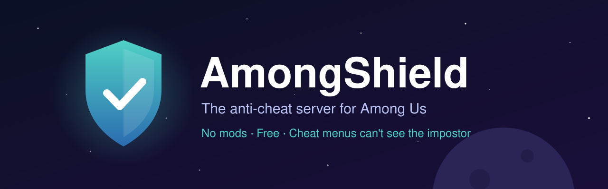

A free community server where cheat menus can't see who the impostor is, and cheaters get kicked and called out in chat.
No mods. You play the normal game on the AmongShield region.
Works on PC, Android and iPhone. PlayStation, Xbox and Switch can't use custom servers.
📱 Phone (Android, iPhone)
- Open Among Us and wait for the main menu. Leave it running.
- Switch to this page on your phone (don't close the game) and tap the button.
- Back in Among Us, tap the region button (globe, bottom right) and pick AmongShield.
AmongShield not in the list? Tap the button again while the game is running. If the Play Store opens, install Among Us first.
Still not working? Try the official Impostor setup page (already filled in for AmongShield, just tap its Android or iPhone button). Still stuck? Tell us your phone model.
💻 PC (Steam, Epic, Microsoft Store)
- Close Among Us.
- Download the setup file below.
- Right-click it and choose Run with PowerShell. If Windows asks, choose Run once or Open.
- Start Among Us. AmongShield is already selected.
🔒 What you're downloading, and why it's safe
It's not a program or a mod. It's a 23-line text file (a PowerShell script, about 1.5 KB) that adds AmongShield to the game's server list. That's the same list you pick North America, Europe or Asia from.
- Saves a backup of your server list first (
regionInfo.json.backup). - Adds one entry, AmongShield, and selects it.
- You can open it in Notepad and read every line before running it. The full code is below.
- Doesn't download anything or connect to the internet.
- Doesn't need admin rights, and doesn't install anything or keep running afterward.
- Doesn't touch your game files, your account or your saved settings. Only the server list changes.
- Doesn't read or send any personal information.
Show the full code (every line)
# Adds the "AmongShield" server to Among Us (PC). Close Among Us first, then right-click -> Run with PowerShell.
# It only edits Among Us's region list (regionInfo.json); a backup is saved next to it.
$ErrorActionPreference = 'Stop'
$file = Join-Path $env:USERPROFILE 'AppData\LocalLow\Innersloth\Among Us\regionInfo.json'
if (-not (Test-Path $file)) { Write-Host 'Start Among Us once (to the main menu), close it, then run this again.'; Read-Host 'Press Enter'; exit 1 }
if (Get-Process 'Among Us' -ErrorAction SilentlyContinue) { Write-Host 'Close Among Us first, then run this again.'; Read-Host 'Press Enter'; exit 1 }
Copy-Item $file "$file.backup" -Force
$json = Get-Content $file -Raw | ConvertFrom-Json
$json.Regions = @($json.Regions | Where-Object { $_.Name -ne 'AmongShield' })
$region = [pscustomobject]@{
'$type' = 'StaticHttpRegionInfo, Assembly-CSharp'
Name = 'AmongShield'
PingServer = 'amongshield.duckdns.org'
Servers = @([pscustomobject]@{ Name = 'http-1'; Ip = 'https://amongshield.duckdns.org'; Port = 443; UseDtls = $false; Players = 0; ConnectionFailures = 0 })
TargetServer = $null
TranslateName = 1003
}
$json.Regions += $region
$json.CurrentRegionIdx = $json.Regions.Count - 1
($json | ConvertTo-Json -Depth 10 -Compress) | Set-Content $file -Encoding UTF8
Write-Host 'Done! Start Among Us; the region "AmongShield" is selected. To play on normal servers again, pick North America/Europe/Asia in the region menu.'
Read-Host 'Press Enter'In plain English:
- Lines 3–6: find the game's server list file and check that Among Us is closed.
- Line 8: make the backup copy.
- Lines 9–10: read the list and remove any old AmongShield entry, so running it twice doesn't add a duplicate.
- Lines 11–19: add the AmongShield entry (its name and address,
amongshield.duckdns.org). - Lines 20–21: select it and save the list.
- Lines 22–23: say "Done!" and wait for you to press Enter.
To undo it, just pick North America, Europe or Asia in the game. To remove it completely, go to %USERPROFILE%\AppData\LocalLow\Innersloth\Among Us and rename regionInfo.json.backup back to regionInfo.json.
It only edits Among Us's server list and backs it up first. Scanned on VirusTotal: 0 of 60 antivirus engines flagged it. Prefer to do it by hand? See the manual steps.
✨ What you get
- ESP protection. Cheat menus like MalumMenu see several fake impostors and can't tell which are real.
- Cheaters get caught. They're stopped, kicked, and the whole lobby is told who it was: forcing sabotages as a crewmate, acting as a ghost, faking a Medbay scan, venting without a venting role, cameras away from Security, unfixable lights, long-range kills and instant tasks.
- More cheats called out. Speed hacks, teleports, moving or killing during a meeting, calling meetings from across the map, far-away reports, Engineer vent cheats, remote repairs, kicking everyone out of vents and chatting while alive are blocked, and the lobby is told who's suspected.
- Clean chat. Messages over 100 characters, or with line breaks or formatting codes, are blocked.
- Game result note. After each game, chat shows who the impostors really were.
- Host rotation. After each game the next player becomes host (on in public lobbies,
/rotate onor/rotate offto change). - Custom vision. Hosts can type
/vision crew 0.85in the lobby (any value 0.05 to 5).